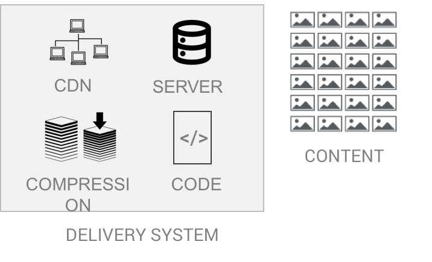
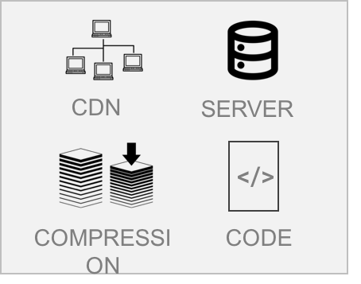
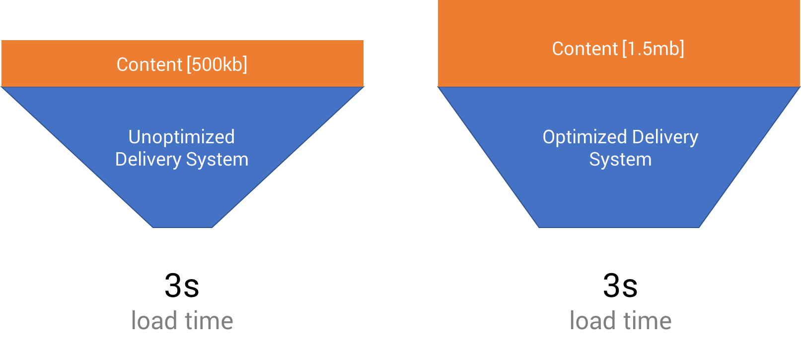

Understanding Site Speed
"When will these people ever understand?"
I had just received another email from yet another one of my clients about site speed. The client's PageSpeed Insights score was low. Another SEO company pointed it out and said they could get them to the perfect score of 100.
I was at a loss. I had talked to our development team repeatedly about this issue. And I was told everything that could be done was done.
Unsatisfied, I was determined I would figure this all out on my own. I read blogs and technical papers. I talked to our developer one-on-one to extract all the nuances and details of why he was convinced we would never get a perfect score.
My diligence paid off.
In the end, I found out our development team was right. I found out there are dozens of factors and nuances that affect site speed. I uncovered numerous myths and unsubstantiated rules of thumb.
In this post, I will share everything I learned about site speed. I will show you exactly why:
- The PageSpeed Insights tool from Google is flawed
- The 3-second load time rule doesn't make sense
- Objective site speed testing is extremely difficult.
I will also share Nifty's approach when it comes to site speed.
Let's get started.
The Common Wisdom
Before I start debunking things, it's important to understand what people are saying about site speed. Based on everything I've seen, the common wisdom boils down to two approaches for determining if a site's load time is acceptable.
- You need a 100/100 score on Google PageSpeed Insights. If you have that, your site is good to go.
- You need a 3-second load time. Otherwise, people will abandon your site in droves.
I'm confident both of these approaches are flawed and less than ideal.
Let's explore why.
How Internet Speed Actually Works
While almost everyone in the United States has used the Internet, most people don't actually understand how it works.
Gaining a basic understanding of the flow of information is important to have when it comes to understanding site speed.
Below is a graphic showing all the touchpoints of a basic Internet connection, which coincidently can all impact site Speed
Let's first look at the left side of the equation. These are User-Controlled Variables. This means each individual person is going to likely have different providers and configurations of these variables.
Rather than spending inordinate amounts of time discussing each of these at length, I will provide a brief list of bullet points about these items and how they can affect site speed:
- The browser you use to browse the Internet can have a huge impact on site load time. That's why there are JavaScript benchmark scores that browsers compete for (including Kraken or Octane). Beyond that, certain add-ons, such as Ad Blockers, can actually improve load time. While others, such as Tor, can slow it to a crawl.
- The device you use can also have an impact on load time. If your device has low RAM or a slow CPU, complex websites will take longer to load. I remember I once had a 2010 iMac that slowed to a crawl whenever I opened up a Google Spreadsheet. Haven't had that problem on my new MacBook Air.
- There are different designations for routers including a/b/g/n/ac. Each of these standards have a different maximum download speed. If you have a Wireless-A router, you're going to have slower internet than if you had a Wireless-AC one.
- Network congestion can impact any router. If you have someone in your house watching Netflix or torrenting, other websites will slow down.
- Another thing that can affect site speed is physical interference for wireless networks. You can actually optimize the Wi-Fi channel your router uses to maximize site speed. Moving the router closer to your computer will also help reduce interference.
- Your Internet Service Provider (ISP) also determines your internet speed. If you have a lower tier package, you will have slower internet. The type of Internet service you sign up for will also determine load time. 3G is way different than Fiber, which is way different than DSL or Cable.
- Some ISPs throttle bandwidth after a certain amount of data has been used. Physical Interference
- The DNS servers you use can also impact site speed. You can use a tool, such as Namebench, to find the fastest DNS server near you.
As you can see, each individual internet user makes dozens of decisions, consciously or not, that can affect site speed.
Now, lets look at the right side of the equation. These are factors that website owners and administrators control.

There are two big variables site owners control.
The first is the amount and type of content on the website. This includes all text, video, and photos.
The second variable is how all the content of the actual site is actually delivered over to Internet users. This includes dozens of technological features such as CDNs, compression, server configurations, and the exact way code is laid out.
Here are some examples of decisions site owners can make which can affect site Speed
- DDOS attacks can cause your website to go down. This can be mitigated by using a CDN like Cloudflare.
- Cheap hosting can also cause your site to be slow or go down - especially with traffic spikes.
- Having a single server in a faraway location will result in slower load times. It's best to have a server as physically close to the user as possible. This can be achieved by using a CDN.
Why PageSpeed Insights Is Smart - Yet flawed
Now that we have a basic understanding of how information flows from a site owner to an Internet browser, it's time for us to examine Google PageSpeed Insights.
Google PageSpeed Insights measures your Delivery System. If you remember our little chart, this refers to the tools and technology used to transfer content from your site to the visitor's browser.

The tool does not measure absolute site speed.
This approach is smart because it ignores all the user-controlled variables that will fluctuate drastically from user to user. It also ignores how much content you have on your site. This means you won't penalized based on the amount of content you want to share - just how efficiently you can get it to to the user. Media heavy sites such as photo galleries won't be relegated to low scores.
I came up with a "Funnel" illustration to help better explain what PageSpeed Insights looks at, as well as to expose one of its flaws.

So, does having a high score on this tool mean you have a fast website?
No!